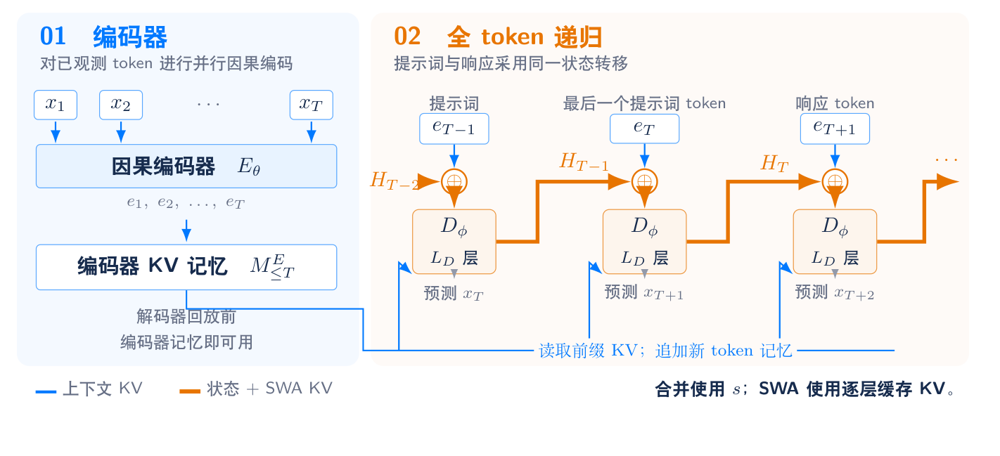
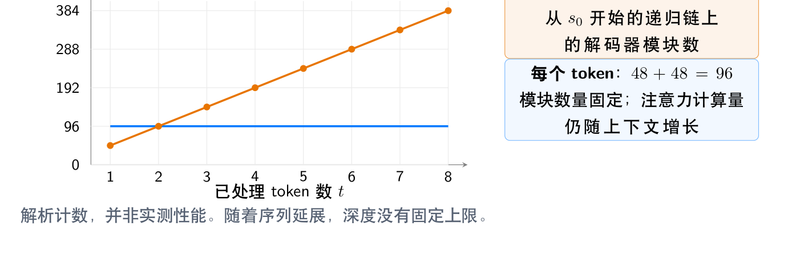
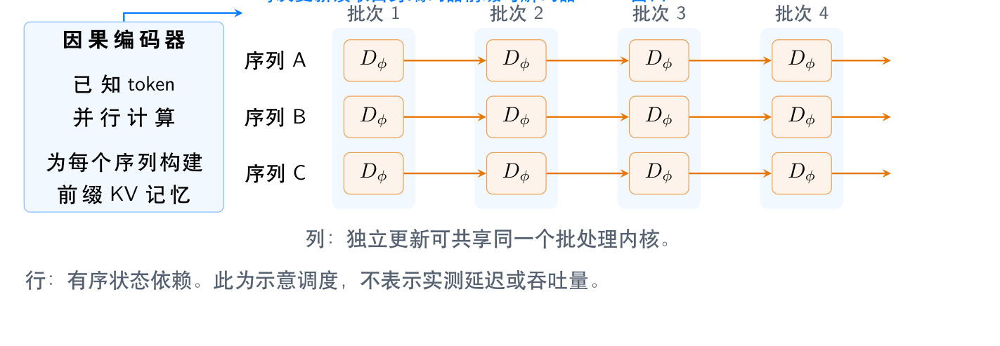
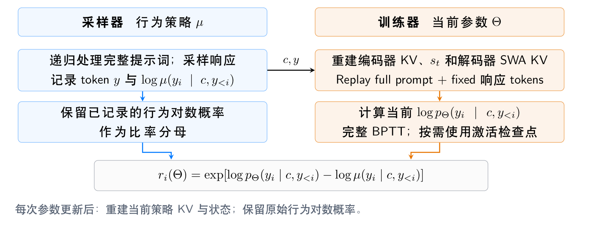

递归循环Transformer（RLT）是一份纯机制设计报告：它把「推理深度」从固定层数中解放出来，让一条连续的解码器状态在提示词与响应之间不断推进，同时保证每个token执行的模块数量恒定。
它同时给出三层协同设计：模型与硬件（编码器记忆把并行计算从递归核心中分离出来）、模型与RL算法（训练与采样共用同一条状态转移，并在当前参数下精确重建当前策略），以及一份明确说明「哪些还没验证」的边界清单。
递归循环Transformer（Recurrent Looped Transformer，RLT）围绕三个目标设计：具有无限深度的潜在推理、面向高效训练与推理的模型与硬件协同设计，以及面向训练与采样一致性的模型与RL算法协同设计。这里的「无限深度」指的是，随着处理的token增多，时间维度上的计算没有固定的架构上限；任意有限序列执行的计算仍然是有限的。
它的基本分工是：因果编码器构建上下文记忆，深层递归解码器把每个token的编码器表示与前一个解码器输出合并。状态在已观测提示词和生成响应中持续演化，不在两者的边界处重新启动。以48层编码器加48层解码器为例，每个token都会把上一步的h96反馈到从h48开始的计算里；两个堆栈可以共享兼容权重，因此在同一骨干网络上形成两次逻辑遍历，每个token执行96次逻辑模块计算。
三个目标分别对应三层含义。潜在推理上，递归状态直接在token之间传递连续的中间计算，处理t个token后一条状态路径穿过t倍解码器层数的模块，深度不受已存储层数限制，继续处理token即可延长路径，而每个token的模块数量保持固定。硬件协同设计上，源自编码器的记忆把并行特征构建与递归状态更新解耦，于是可以采用大批量编码器内核、跨序列独立解码器转移的批处理、常驻权重与KV复用，以及激活检查点的反向计算。算法协同设计上，预训练、监督微调、采样和RL回放都由同一个依赖历史的状态转移定义，当前策略状态在当前参数下由完整历史重建，行为对数概率始终对应生成动作的采样器，从而消除提示词与响应采用不同计算所引入的结构性失配。
与已有工作的关系是：YOCO这类编码器记忆架构启发了记忆复用设计，Feedback Transformer与Recurrent Transformer为时间反馈提供了重要先例。RLT关注的是完整解码器递归，以及对硬件执行与RL回放语义的联合规定。需要说明的是，这篇报告阐述机制，并不报告实测效率或扩展结果。
设x(1:S) 是一个独立序列，且x1为BOS。推理时x(1:T) 是已观测提示词，之后的token构成续写；索引T标记服务边界，并不表示条件模型发生改变。记LE、LD分别为编码器与解码器深度，d为残差流宽度。编码器表示为e(t)，递归输出为s(t)。完整解码器状态是H(t) = (s(t), CD(t))，其中CD(t) 包含各解码器滑动窗口注意力（SWA）层保留的键值投影，窗口大小为W，包含当前token，每次更新后每层缓存至多保留W−1个位置供下一次更新使用。所有参数（包括可学习的初始状态s⋆）统记为 Θ，Eθ 与Dφ 分别表示编码器与解码器部分。
对已观测前缀计算编码器表示e(1:T) = Eθ(x(1:T))。借助因果掩码，同一编码器层内的各个位置可以同时处理，但层与层之间仍按顺序计算。对解码器记忆组g，键值记忆由编码器表示投影得到：k(g,t) = PK(g)(e(t), t)，v(g,t) = WV(g)·RMSNormE(e(t))，记忆M(≤t) 由前缀内所有键值对组成。
键映射包含归一化、投影与所采用的位置变换；解码器第 ℓ 层读取记忆组g(ℓ)。组数G = 1表示跨层共享记忆，G = 等于解码器层数则允许逐层使用不同投影。这份全局记忆依赖编码器表示，而不是解码器状态。参考解码器把针对该记忆的交叉注意力与针对解码器激活的因果SWA结合：两种存储承担不同角色，M(≤t) 提供全局编码器上下文，CD(t) 提供有界窗口内源自解码器的键值。
状态只在BOS之前初始化一次：H(0) = (s⋆, 空集)。对每一个已观测或采样的token执行同一个转移：先做合并u(t) = Merge(e(t), s(t−1))；再计算H(t) = (s(t), CD(t)) = Dφ(u(t); M(≤t), CD(t−1), t)；最后由s(t) 经归一化与输出投影的softmax得到下一个token的分布。
对固定token序列，编码器特征不直接依赖解码器状态，但用于预测首个响应token的完整状态包含了全部提示词转移，也就是一串嵌套的转移函数复合。生成从该状态继续：从s(T) 采样出下一个token后，对它做增量编码、追加源自编码器的键值，并计算新状态，其中包含所有解码器SWA缓存的更新。服务边界处不会重置状态的任何一个分量。
预填充（prefill）先计算提示词的因果编码器表示与记忆，然后依次计算各步状态。即使完整提示词记忆已经可用，解码器在位置t的注意力仍被限制在M(≤t) 之内。生成阶段用编码器缓存执行单步编码，随后追加记忆并执行同一套解码器转移。已观测token可以分块编码，但必须保留因果编码器缓存，且每个token仍须执行其解码器更新。
并行编码器处理与逐步递归编码，是同一因果计算的不同执行调度；对非线性解码器递归，报告不假设存在对应的常规全并行调度。特别地，历史解码器键值必须由此前的递归更新生成，标准的并行SWA解码器遍历通常并不等价。
一种具体的门控合并形式是：先对上一状态做RMSNorm得到r；门控g由输入编码器表示与该状态拼接后经sigmoid得到；合并结果等于编码器表示加上按反馈尺度 α 缩放的、门控与状态投影逐元素相乘的结果。其中 α 控制反馈尺度，报告指出「较小的非零初始反馈尺度」只是一种候选初始化方式，并非已经确立的稳定性方案；使用标量门控或低秩投影可以降低开销。
解码器模块依次执行因果SWA、编码器记忆交叉注意力与FFN，每步都带残差与归一化。注意力算子本身包含输出投影，查询与键映射包含各自的归一化与位置变换。在每一层，当前键值都在SWA之前由该层输入构建，因此对当前位置的注意力不会引入循环依赖；历史解码器键值来自上一步的状态。更新后只保留窗口内的位置，窗口为1时该集合为空。预填充、采样与回放使用相同的位置元数据约定；其他子层顺序会定义不同变体，必须在所有执行模式下保持一致。

参考的权重绑定配置取编码器与解码器层数相同。编码器第 ℓ 层的自注意力与解码器第 ℓ 层的SWA共享兼容的查询、键、值与输出投影矩阵，两者的FFN也共享；编码器使用自身的因果上下文，解码器SWA则使用窗口内的解码器激活。解码器交叉注意力拥有独立的查询与输出投影，以及记忆投影。各阶段专属的归一化、合并与读出仍是显式模块。
因此，解码器模块是在复用的注意力与FFN核心之上增加交叉注意力；两次逻辑遍历并不意味着每个模块的浮点运算量相等。这是在不同注意力连接方式下复用参数，而不是复制激活，任何解码器输出都不被等同于编码器输出。若不做权重绑定，完整状态递归依然保留，只是取消了沿深度的参数复用；编码器记忆组的共享则是另一个独立维度，既不会合并也不会消除逐层的解码器SWA缓存。
报告给出的第一个命题是：固定参数、token序列、位置约定与独立序列初始状态，并假设因果编码器执行在数学上等价、SWA窗口与缓存更新相同、解码器操作确定，那么对任意前缀「先批量编码器预填充、再递归解码器更新」与「逐token增量处理」，会得到相同的状态与下一个token分布。换句话说，对固定的token历史，移动提示词与响应的分割位置不会改变条件分布。
证明的思路是归纳：因果编码器的等价性保证两种调度得到相同的编码器表示与记忆；两者都从同一初始状态出发；若在t−1时状态相同，那么第t步对相同输入执行相同操作，状态仍相同。服务分割位置从未出现在转移公式中。
需要强调的是，这只是在数学意义上的等价：不同内核与精度选择仍可能带来数值差异；该结论也假设分词与上下文一致，且任一执行过程中都没有丢弃token、重置状态或插入过时状态。
把编码器预填充计算量、记忆投影计算量与单步解码器计算量相加，就得到总预填充计算量。对稠密注意力以及与模型宽度成正比的键值宽度，粗略的算术复杂度与传统稠密Transformer同阶：编码器与解码器项、记忆投影项，加上解码器在受限窗口上的项。
关键差异不在阶数，而在顺序性：解码器存在一条经过T次转移的顺序路径，每次转移包含LD个模块。因此编码器可以并行，并不意味着整个模型的预填充完全并行；即使算术复杂度阶数相同，状态递归仍可能降低硬件利用率。报告明确表示接受这一成本以保留完整提示词计算，也不声称通过减少预填充计算获得加速。
此外，每个新token要执行LE加LD个模块，还要加上合并与记忆投影的开销，而注意力计算量仍随上下文长度增长。推理缓存存储量约由三部分构成：编码器侧随层数与记忆组数增长的部分、解码器SWA保留的历史（与窗口大小取较小值）、以及当前递归输出。参数绑定能减少权重存储，但既不会消除第二次逻辑遍历，也不会消除任何一种缓存的作用。
到位置t为止的可用状态路径复合了t次解码器转移，从序列起点穿过t倍解码器层数的模块；对长度为T的提示词与随后n个已处理续写token，路径包含 (T+n) 倍解码器层数的模块。这个深度包含提示词，并随已处理历史增长，而每个token的模块数量保持固定。
报告也给出了必要的保留：门控、收缩效应与可学习投影可能抑制长路径的实际贡献，结构深度本身并不保证推理能力；图中的计数是解析计数，不含合并与读出，衡量的是结构深度，而不是有效推理质量或实际耗时。

对于已知的训练序列或提示词，可以用token并行内核计算编码器特征与记忆投影，随后解码器遵循状态依赖执行。可以把独立序列中已就绪的解码器转移组成批次：每个序列贡献它的下一次状态更新，同时维护自己的编码器KV前缀、解码器SWA缓存、递归输出与位置。这提供了批次层面的并行性，但报告并不声称递归解码器内部存在序列层面的并行性。
推理时，编码器单步计算、记忆追加、合并、解码器模块与读出形成重复的执行调度；联合调度独立请求可以增大矩阵运算规模、提高权重复用，但小批次或不均匀的序列长度可能限制利用率。报告也不假设一般非线性解码器存在精确的并行扫描。

对固定的token前缀与参数集，源自编码器的键值不再变化：解码器层读取这部分记忆，同时把源自解码器的键值追加到各层有界的SWA缓存里，这些缓存不能被编码器记忆替代。共享记忆组可以减少键值存储与投影，而使用更多记忆组则保留逐层不同的记忆变换。绑定兼容的编码器与解码器权重可以减少参数存储、并可能有利于权重常驻，但它本身并不减少模块的计算次数，也不保证更低延迟。
在依赖关系与数值语义允许时，归一化、门控、状态投影与残差相加可以考虑融合执行。约束是明确的：交叉注意力只能读取有效的编码器前缀记忆，SWA只能读取有效的局部窗口，读取未来条目的「更快内核」会改变模型本身。报告强调这些都是实现目标，并不表示内核已经完成或已经测得带宽节省。
激活检查点以重计算换取更少的激活存储，同时保留完整的时间反向传播（BPTT）。编码器批处理、跨样本解码器批处理与检查点位置，应当结合序列长度与加速器内存共同选择。优化目标是在参考递归计算下获得有效的训练与推理吞吐量，而不是通过近似把递归消除掉。
报告引用了另一项工作对「实际执行策略」的界定：它既取决于权重，也取决于精度、缓存构建、归约与采样变换等执行选择。硬件与算法选择在「回放保真度」处交汇：内核精度、随机操作、位置约定与缓存生命周期必须与被评估的策略一致。完整提示词递归确实产生额外成本，协同设计的目的是高效执行这些计算：在拿到测量结果之前，硬件高效的训练与推理仍然只是工程目标。
基础目标是全序列的下一token预测损失：在初始状态展开完整的解码器状态转移，对位置1到S−1的每个非BOS目标都施加监督，编码器、记忆投影、合并模块与解码器联合训练。独立文档会重置递归输出、解码器SWA缓存、编码器缓存与位置，并使用彼此隔离的注意力掩码。报告特别提醒：必须使用完整文档，或者明确声明初始上下文约定的片段；不能在切分片段时悄然丢弃状态，却仍声称计算了完整历史似然。
在SFT中，对助手目标令掩码为1，对用户、系统、工具或填充目标令其为0，只对至少有一个选中目标的样本计算损失。关键细节是：损失掩码不屏蔽状态更新，也不分离编码器记忆、递归输出或解码器键值的梯度。也就是说，解码器处理所有先前上下文token（包括用户与工具消息），助手损失的梯度可以流经这些提示词计算；状态不在助手边界重置，也不需要额外的边界适配目标来修补提示词专属的转移变化。
策略定义为响应各token条件概率的乘积，目标是在给定提示词下最大化期望奖励。其同策略得分函数梯度形如「（奖励减去与响应无关的基线）× 各token对数概率梯度之和」；对数概率回放期间离散采样token保持固定，但求导包含其连续的递归计算。报告强调，架构不要求特定的奖励函数、裁剪规则或KL正则项。
回放约定是这一节的核心：采样器记录每个动作在实际采样分布下的行为对数概率；训练器在当前参数下更新时，用这些参数重新计算因果编码器特征，并从相同序列初始化出发，沿完整提示词与已采样响应前缀重建递归输出与每个解码器SWA缓存，由此得到当前策略对数概率与逐token比率。当参数与采样约定相同时，训练器与采样器表示的是同一套计算。
报告还澄清了重要性采样的边界：原始模型分布不能与温度缩放或截断后的采样分布混为一谈；精确重要性采样要求目标分布在相关历史上对行为分布有足够覆盖，而对未截断的softmax目标使用top-k或top-p采样通常违反该条件。行为对数概率必须包含温度、截断与重新归一化：仅记录元数据无法恢复缺失的支持集。此外，在某一参数值处前向概率相同，并不足以证明策略梯度相同：训练器必须对递归目标求导，或采用前向与反向都等价的实现。因此RLT同时规定完整历史前向回放及其梯度路径。最后，正确的对数概率并不会让任意离策略损失变得无偏，逐token裁剪或其他替代目标各自引入算法选择：架构导致的状态失配与常规策略滞后是不同的问题。

教师强制允许对已知token执行并行的因果编码器遍历，但解码器回放在完整历史上仍然是顺序的。即使损失只施加于响应token，完整BPTT也会沿编码器记忆、递归输出与解码器SWA键值，在提示词与响应之间传播梯度。反过来，在no_grad下运行提示词递归，如果用当前参数重算状态可以保持前向概率，却会遗漏提示词状态的导数，因此只是一种梯度近似。
参考训练计算采用完整BPTT，并按需使用激活检查点：检查点在反向传播期间以相同参数与随机状态重算前向操作，改变的是内存与计算成本，而不是有意截断梯度。截断BPTT则是可选近似，保留数值、但显式分离选定边界张量的梯度；仅分离递归输出仍会留下经由解码器键值与编码器记忆的梯度路径，因此截断规范必须说明所有保留与分离的路径。
另一个容易踩的点是状态过时：一次回放内参数保持固定，优化器更新之后，此前计算的编码器键值、递归输出与解码器SWA键值通常不再是当前策略的值，应当从序列起点重算，或从相同参数与执行约定下产生的精确前缀检查点重算。这对同一条采样轨迹上的每一轮重复优化都成立；采样器的旧隐藏状态不能替代当前策略回放，但其记录的行为对数概率仍作为比率分母。
对话被序列化为从BOS开始的token历史：新的用户消息、工具结果、角色分隔符与助手token都会执行编码器与解码器更新。工具返回时，先用缓存的编码器前缀对新观测片段编码，再从已有状态出发逐个处理所有新token，推进解码器；恢复生成时不重置状态。参考策略只会在新的独立序列或显式定义的上下文重置处重置。
精确的前缀快照包含编码器缓存、源自编码器的交叉注意力记忆、完整解码器状态、token与位置元数据、SWA窗口约定与模型版本。兼容的固定权重快照可以复用于推理，因为状态与服务分割位置无关；但要复现采样输出还需要采样器的随机状态。仅从文本恢复时，需要回放来重建隐藏状态；而权重更新之后，复用旧状态就不再满足精确当前策略计算的要求。
同理，删除、编辑或截断前缀都会改变条件历史，应当从有效的更早检查点重算，而不能保留包含已删除内容的状态；追加一个会改写更早token的模板，也不再是仅追加的缓存操作。在多轮RL中，外部提供的token会更新完整状态，但它们不是采样策略动作，因此不附加动作重要性比率因子，其状态更新在完整BPTT中仍然可微。
在执行层面，RLT与几条已有线索的关系是明确的。编码器记忆方面，YOCO为上层交叉解码器构建可复用KV记忆并支持预填充提前退出，DeepSeek-V4.1-Flash从最终编码器状态投影得到解码器全局KV并单独处理解码器SWA；RLT保留源自编码器的记忆，但让每个提示词token都经过递归解码器，因此不继承这些设计「在整个提示词阶段跳过解码器」的机制。
时间反馈方面，Feedback Transformer把已处理的历史表示提供给未来计算，Recurrent Transformer从各层输出构建该层持久KV并通过精确分块调度改善内存搬运；RLT则是把前一个最终解码器输出反馈到下一个解码器输入，其全局注意力记忆源自编码器、局部SWA键值源自解码器，提示词与响应都承载递归。区别在于反馈位置与记忆表示，而不是声称预填充完全并行。沿深度复用方面，Universal Transformers沿深度共享计算，递归深度潜在推理通过迭代递归模块扩展计算量；RLT的状态跨token推进，权重绑定配置还额外共享兼容的编码器与解码器权重：单独的权重绑定或时间递归本身，都不足以确立新颖性或质量提升。
结论部分，RLT把三项设计原则合在一起：无界时间深度的潜在推理、模型与硬件协同设计、模型与RL算法协同设计。连续的解码器状态把计算贯穿每个提示词与响应token，同时每个token的模块数量保持固定；编码器记忆的分离在递归核心周围提供了并行计算、记忆复用与激活检查点的机会；共享状态转移与精确的当前策略回放消除了训练器与采样器之间由提示词边界引起的结构性失配，为可靠的RL扩展提供基础。报告的说法很克制：计算定义已经明确，实际的推理质量、硬件效率与扩展表现仍需未来验证。
附录给出了参考执行调度的四段流程。递归提示词预填充：从BOS与初始状态开始，对提示词做并行因果编码并构建键值记忆，然后逐token计算状态，解码器各层只读取允许访问的历史SWA条目与当前键值，绝不向更早的查询暴露未来键值，最后从末尾状态预测首个响应token。生成与新的外部输入：采样下一个token后消费它（更新编码器缓存与记忆、把完整状态推进到下一步），每个被消费的token恰好执行一次递归更新并插入一次键值；当用户或工具一次提供多个token时，可基于已有前缀用因果批处理计算其编码器表示，但解码器仍按顺序更新。长度受限的生成可能推迟消费最后输出的token，此时缓存API必须单独记录待处理token并在任何后续token之前消费它，缓存表示的是「已消费前缀」。
预训练与SFT的调度强调：所有上下文token都执行状态更新，损失掩码不能替代注意力掩码或完整文档状态重置；打包的独立序列使用独立的递归状态、缓存、位置与注意力掩码，两种注意力机制都不得跨越文档边界；训练中的缓存操作必须保留自动微分依赖，或支持等价重计算。RL回放调度强调：整个前向回放与反向传播期间固定当前参数，不禁用参数梯度，重算已知历史的编码器表示并从初始状态重建递归输出与各层SWA缓存，按顺序回放后续token；不给外部用户或工具token赋予策略动作因子；每次参数更新后都要让依赖参数的编码器与解码器缓存失效。
因果性与梯度路径部分给出了两个结论：在确定性执行、编码器因果、编码器记忆受前缀限制、解码器SWA因果的条件下，完整状态只依赖当前及此前的token与包含初始状态在内的参数；并且完整参数导数包含编码器特征、记忆、每次转移与解码器键值投影对参数的依赖，分离递归输出、解码器键值或编码器侧边界张量都会删除相应的梯度路径，这些操作都不是完整BPTT。缓存状态的精确性部分则强调：只有完整缓存与当前参数、已消费token前缀、位置、初始化、窗口语义与策略执行设置完全匹配时，缓存前缀才能替代用于概率评估的前向回放；已经分离梯度的缓存不能提供完整梯度训练所需的导数图；SWA淘汰限制未来直接访问旧键值，但它本身并不是停止梯度操作，推理缓存大小并不能限制完整BPTT的激活存储量。
参考：https://github.com/yifanzhang-pro/recurrent-looped-tranformer/blob/master/Recurrent_Looped_Transformer_ZH.pdf